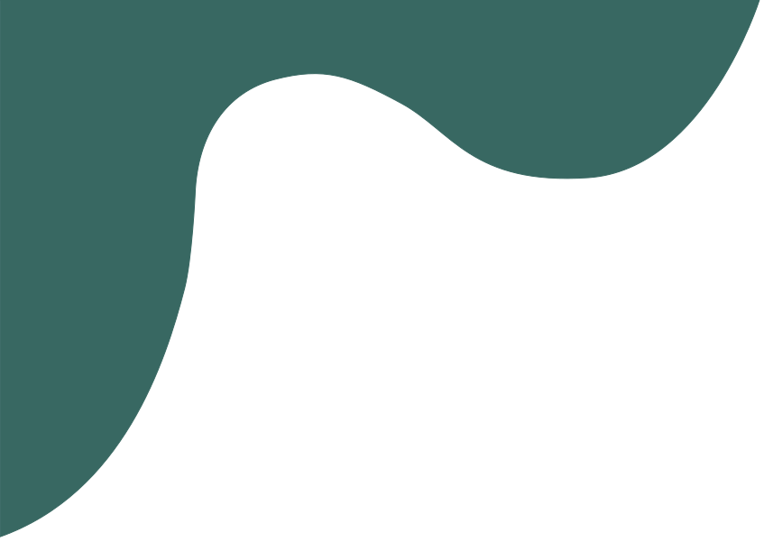
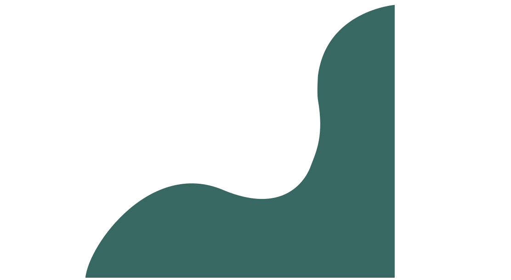
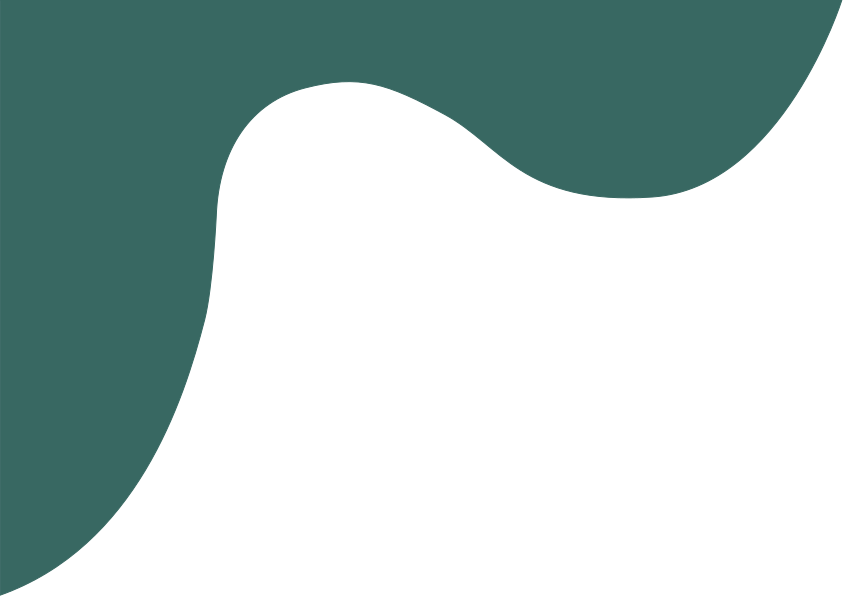
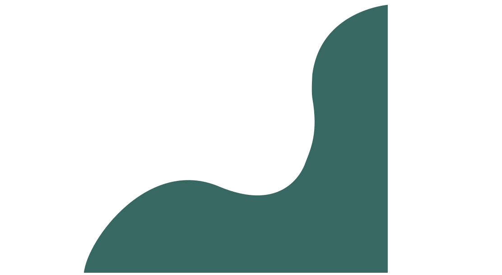

...multimediedesign studerende, baseret i Aalborg, med en brændende passion for UX/UI design.
Med erfaring og uddannelse under armen har jeg udviklet mine evner inden for tekstforfatning, SEO, front-end udvikling og UX/UI design. Derfor leder jeg nu efter praktik plads hvor jeg yderligere kan udvikle mig.
Jeg ser hver udfordring som en mulighed for at forbedre og forfine mine færdigheder. Evnen til at skabe og forme en ide til produkt, er en drøm hvis lys aldrig går ud og det er den energi jeg altid vil bringe med mig og jeg ser frem til at kunne fremvise det.